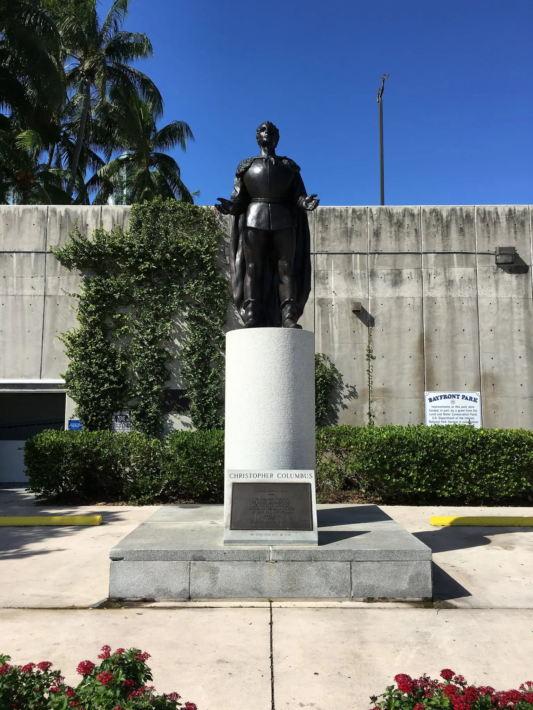

Vizcaya Museum and Gardens, wcześniej znana jako Villa Vizcaya, to dawna willa i posiadłość biznesmena Jamesa Deeringa z fortuny Deering McCormick-International Harvester, w Biscayne Bay w dzisiejszej dzielnicy Coconut Grove w Miami na Florydzie. Posiadłość Vizcaya z początku XX wieku obejmuje również: rozległe ogrody włoskiego renesansu; rodzimy krajobraz leśny; oraz zabytkowy kompleks budynków gospodarczych wsi.
Pomnik Krzysztofa Kolumba stoi w dzielnicy Bayfront Park w Miami na Florydzie w Stanach Zjednoczonych. Został zdewastowany w czerwcu 2020 r., aby zaprotestować przeciwko morderstwu George'a Floyda.Christopher Columbus was an Italian explorer and navigator who completed four voyages across the Atlantic Ocean, opening the way for the widespread European exploration and colonization of the Americas.
Pomnik Holokaustu w Greater Miami Jewish Federation to pomnik Holokaustu przy Meridian Avenue 1933-1945 w Miami Beach na Florydzie. Został on wymyślony przez komitet ocalałych z Holokaustu w 1984 r., formalnie utworzony w 1985 r. jako Komitet Pamięci o Holokauście, organizacja non-profit
Kliknij tutaj aby zobaczyc inne wyjątkowe budowle